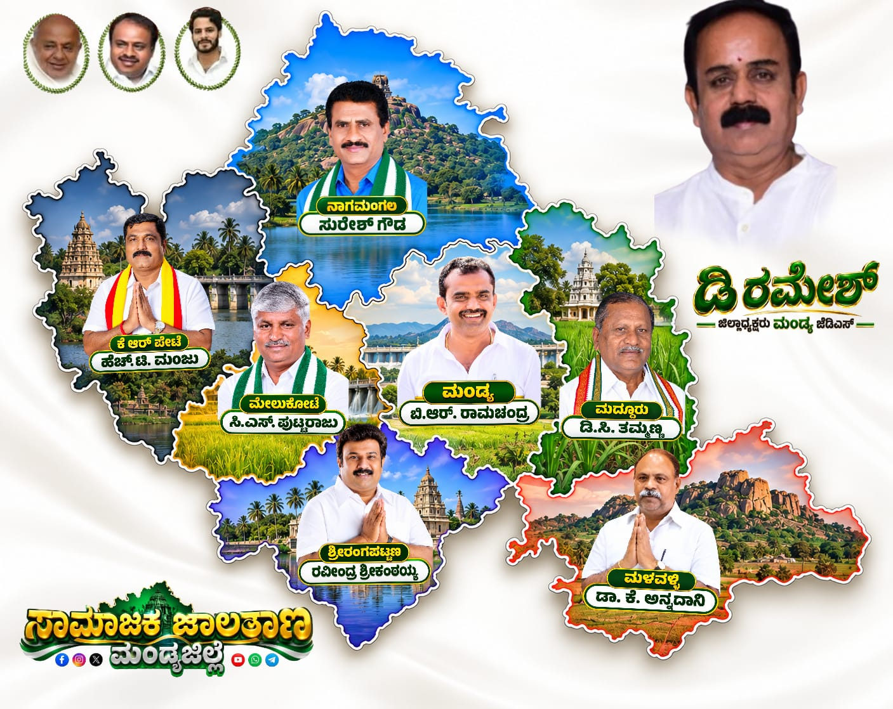
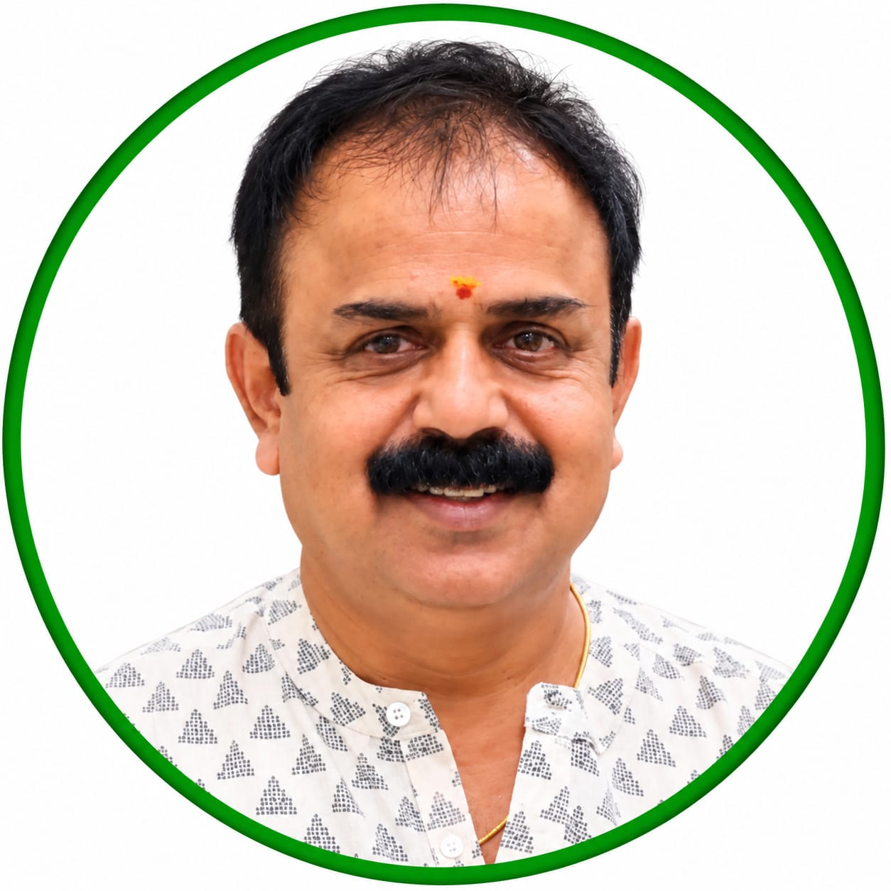
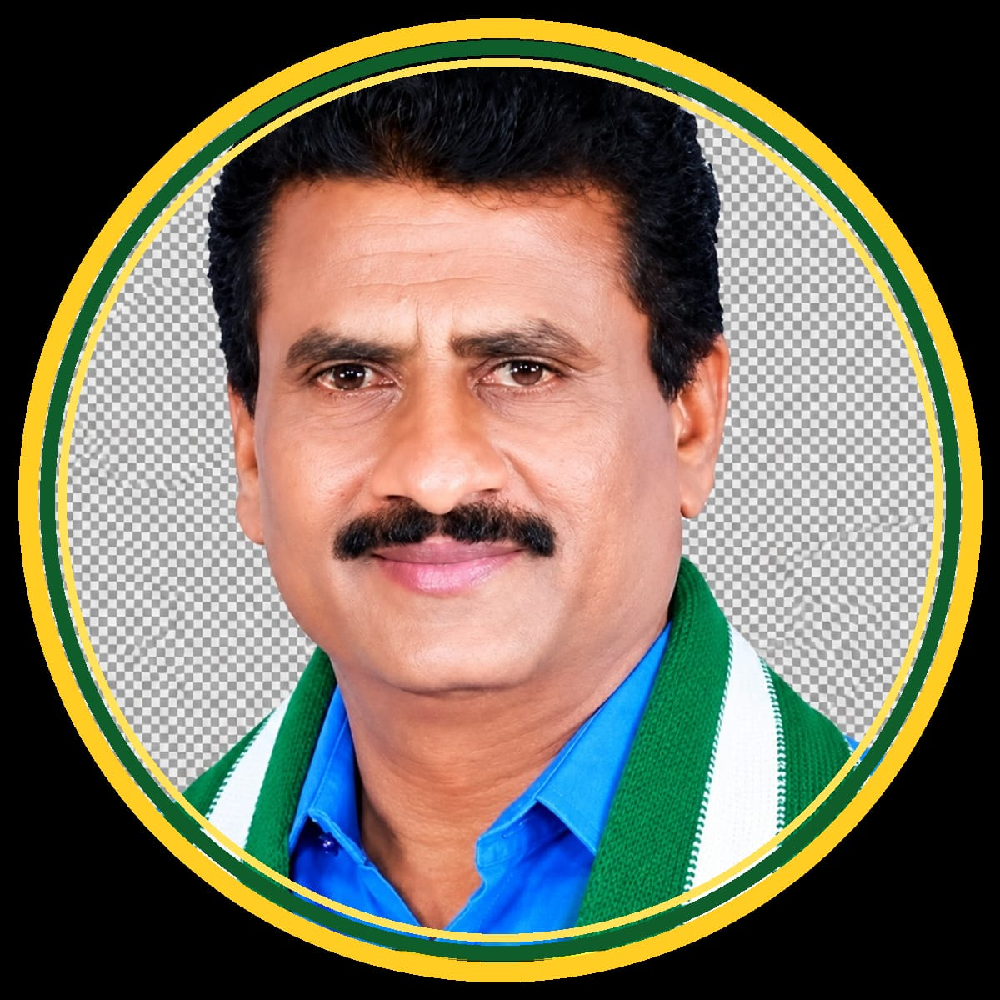
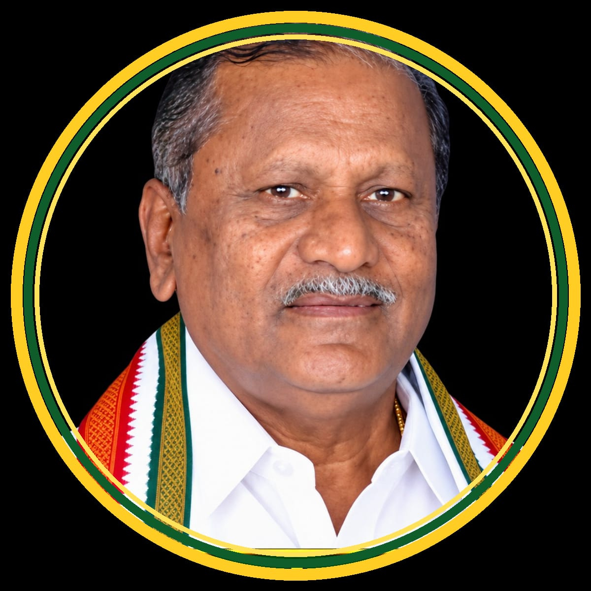
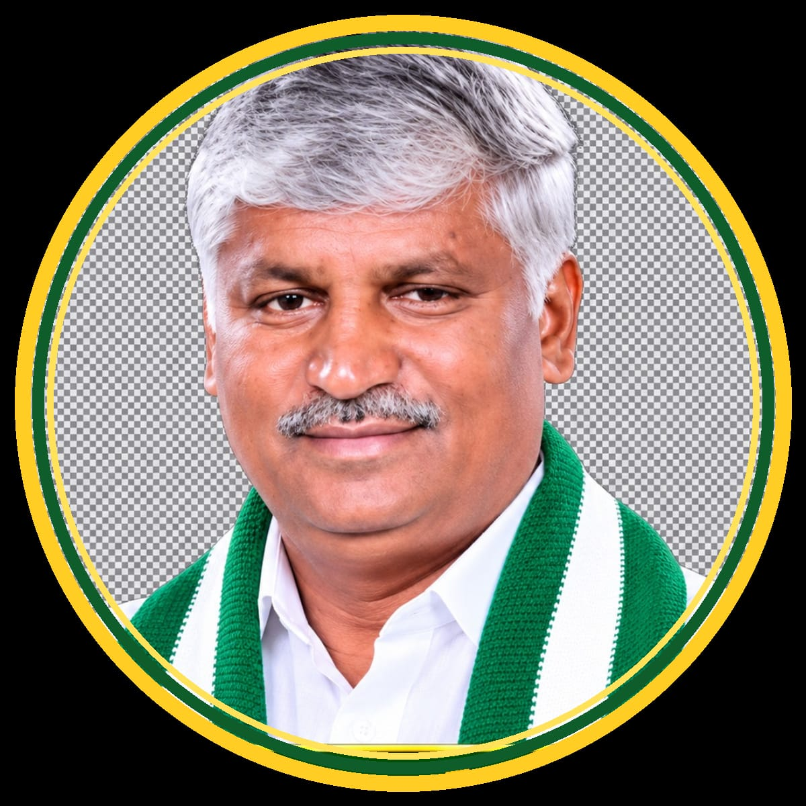
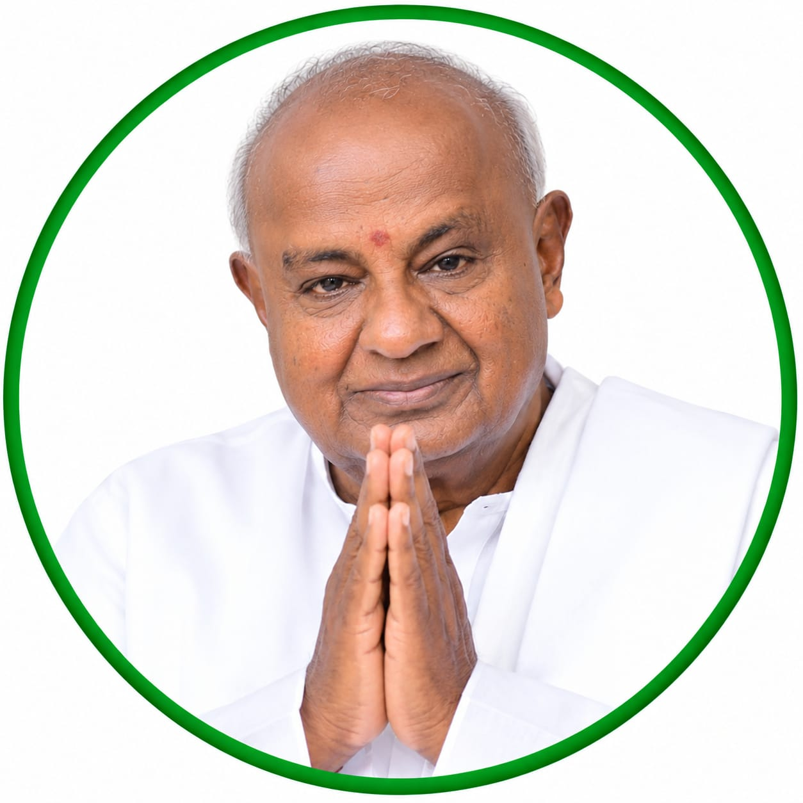

Mandya District Unit
ರೈತರ, ಕಾರ್ಮಿಕರ ಮತ್ತು ಸಾಮಾನ್ಯ ಜನರ ಪರವಾದ ಪಕ್ಷ. ಸಿದ್ಧಾಂತ, ಸೇವೆ ಮತ್ತು ಅಭಿವೃದ್ಧಿಯ ಸಂಕಲ್ಪದೊಂದಿಗೆ ಮಂಡ್ಯ ಜಿಲ್ಲೆಯ ಸರ್ವತೋಮುಖ ಪ್ರಗತಿಗಾಗಿ ಶ್ರಮಿಸುತ್ತಿರುವ ನಿಮ್ಮ ಪಕ್ಷ.
ವಿಧಾನಸಭಾ ಕ್ಷೇತ್ರಗಳು
ಲೋಕಸಭಾ ಕ್ಷೇತ್ರ
ಪಕ್ಷ ಸ್ಥಾಪನೆ
ಜಿಲ್ಲೆಗಳಾದ್ಯಂತ ಕಾರ್ಯಚಟುವಟಿಕೆ*
ಜೆ.ಡಿ.ಎಸ್ ಪಕ್ಷವು ಸಾಮಾಜಿಕ ನ್ಯಾಯ, ಜಾತ್ಯತೀತತೆ ಮತ್ತು ಗ್ರಾಮೀಣ ಅಭಿವೃದ್ಧಿಯ ಸಿದ್ಧಾಂತವನ್ನು ಹೊಂದಿರುವ ರಾಜಕೀಯ ಪಕ್ಷವಾಗಿದೆ. ರೈತರ ಹಿತರಕ್ಷಣೆ, ಕೃಷಿ ಆಧಾರಿತ ಆರ್ಥಿಕತೆಯ ಬಲವರ್ಧನೆ ಮತ್ತು ಸ್ಥಳೀಯ ಆಡಳಿತದಲ್ಲಿ ಜನರ ಸಹಭಾಗಿತ್ವಕ್ಕೆ ಪಕ್ಷ ಆದ್ಯತೆ ನೀಡುತ್ತದೆ.
ಮಂಡ್ಯ ಜಿಲ್ಲೆಯು ಸಾಂಪ್ರದಾಯಿಕವಾಗಿ ಪಕ್ಷದ ಪ್ರಬಲ ನೆಲೆಗಳಲ್ಲಿ ಒಂದಾಗಿದ್ದು, ಜಿಲ್ಲೆಯ ರೈತ ಸಮುದಾಯ ಮತ್ತು ಯುವಜನತೆಯ ಬೆಂಬಲದೊಂದಿಗೆ ಪಕ್ಷ ನಿರಂತರ ಸೇವಾ ಕಾರ್ಯದಲ್ಲಿ ತೊಡಗಿಸಿಕೊಂಡಿದೆ.

ಜಿಲ್ಲಾಧ್ಯಕ್ಷರು, ಜೆ.ಡಿ.ಎಸ್ ಮಂಡ್ಯ ಜಿಲ್ಲಾ ಘಟಕ
ಜಿಲ್ಲೆಯಾದ್ಯಂತ ಪಕ್ಷ ಸಂಘಟನೆ, ಕಾರ್ಯಕರ್ತರ ಮಾರ್ಗದರ್ಶನ ಮತ್ತು ಜನಪರ ಕಾರ್ಯಕ್ರಮಗಳ ಅನುಷ್ಠಾನದ ಜವಾಬ್ದಾರಿ ಹೊಂದಿದ್ದಾರೆ.
ಜಿಲ್ಲೆಯ ಏಳು ಕ್ಷೇತ್ರಗಳ ಜೆ.ಡಿ.ಎಸ್ ಅಭ್ಯರ್ಥಿಗಳ ವಿವರ
ಬಿ.ಆರ್. ರಾಮಚಂದ್ರ
ಜೆ.ಡಿ.ಎಸ್ ಅಭ್ಯರ್ಥಿ, ಮಂಡ್ಯ ಕ್ಷೇತ್ರ
ಎ.ಎಸ್. ರವೀಂದ್ರ ಶ್ರೀಕಂಠಯ್ಯ
ಜೆ.ಡಿ.ಎಸ್ ಅಭ್ಯರ್ಥಿ, ಶ್ರೀರಂಗಪಟ್ಟಣ ಕ್ಷೇತ್ರ

ಸುರೇಶ್ ಗೌಡ
ಜೆ.ಡಿ.ಎಸ್ ಅಭ್ಯರ್ಥಿ, ನಾಗಮಂಗಲ ಕ್ಷೇತ್ರ
ಎಚ್.ಟಿ. ಮಂಜು
ಜೆ.ಡಿ.ಎಸ್ ಅಭ್ಯರ್ಥಿ, ಕೆ.ಆರ್.ಪೇಟೆ ಕ್ಷೇತ್ರ
ಡಾ. ಕೆ. ಅನ್ನದಾನಿ
ಜೆ.ಡಿ.ಎಸ್ ಅಭ್ಯರ್ಥಿ, ಮಳವಳ್ಳಿ ಕ್ಷೇತ್ರ

ಡಿ.ಸಿ. ತಮ್ಮಣ್ಣ
ಜೆ.ಡಿ.ಎಸ್ ಅಭ್ಯರ್ಥಿ, ಮದ್ದೂರು ಕ್ಷೇತ್ರ

ಸಿ.ಎಸ್. ಪುಟ್ಟರಾಜು
ಜೆ.ಡಿ.ಎಸ್ ಅಭ್ಯರ್ಥಿ, ಮೇಲುಕೋಟೆ ಕ್ಷೇತ್ರ

ಪಕ್ಷದ ಸಂಸ್ಥಾಪಕರು, ಮಾಜಿ ಪ್ರಧಾನ ಮಂತ್ರಿ
ರಾಜ್ಯಾಧ್ಯಕ್ಷರು, ಕೇಂದ್ರ ಸಚಿವರು ಹಾಗೂ ಮಂಡ್ಯ ಸಂಸದರು
ಯುವ ಘಟಕದ ಮುಖಂಡರು
(ಮಾದರಿ ವಿಷಯ - ದಯವಿಟ್ಟು ನಿಜವಾದ ಹೇಳಿಕೆಗಳನ್ನು ಸೇರಿಸಿ)
"ಮಂಡ್ಯ ಜಿಲ್ಲೆಯ ರೈತರ ಹಿತರಕ್ಷಣೆಗಾಗಿ ಪಕ್ಷ ಸದಾ ಬದ್ಧವಾಗಿದೆ."
"ಯುವಜನತೆಗೆ ಉದ್ಯೋಗ ಮತ್ತು ಕೌಶಲ್ಯ ತರಬೇತಿ ನಮ್ಮ ಆದ್ಯತೆ."
"ಗ್ರಾಮೀಣ ಮೂಲಸೌಕರ್ಯ ಅಭಿವೃದ್ಧಿಗೆ ನಾವು ನಿರಂತರವಾಗಿ ಶ್ರಮಿಸುತ್ತಿದ್ದೇವೆ."
ಕೇಂದ್ರ ಸಚಿವ ಎಚ್.ಡಿ. ಕುಮಾರಸ್ವಾಮಿ ಅವರು ಅಂಬೇಡ್ಕರ್ ಭವನದಲ್ಲಿ ಸುಮಾರು ₹2.15 ಕೋಟಿ ಮೌಲ್ಯದ CSR ಯೋಜನೆಗಳಡಿ 299 ಫಲಾನುಭವಿಗಳಿಗೆ ಸಹಾಯಕ ಸಾಧನ ವಿತರಿಸಿ, ಮಂಡ್ಯ MIMS ನಲ್ಲಿ ಡಿಜಿಟಲ್ ಪರೀಕ್ಷಾ ಘಟಕ ಹಾಗೂ ಶಾಲಾ ಕೊಠಡಿಗಳನ್ನು ಉದ್ಘಾಟಿಸಿದರು.
ಕೇಂದ್ರ ಸಚಿವ ಎಚ್.ಡಿ. ಕುಮಾರಸ್ವಾಮಿ ಅವರು ಸಚಿವ ಎಂ.ಬಿ. ಪಾಟೀಲ್ ಅವರೊಂದಿಗೆ ಮಂಡ್ಯದಲ್ಲಿ 500 ಎಕರೆ ಪ್ರದೇಶದಲ್ಲಿ ಆಟೋಮೋಟಿವ್ ಸಂಶೋಧನಾ ಕೇಂದ್ರ (ARAI) ಹಾಗೂ ಕೈಗಾರಿಕಾ ಹಬ್ ಸ್ಥಾಪನೆ ಕುರಿತು ಚರ್ಚೆ ನಡೆಸಿದರು.
ಬಸರಾಳು ಬಳಿ ARAI ಪರೀಕ್ಷಾ ಕೇಂದ್ರಕ್ಕಾಗಿ ಭೂಮಿ ಲಭ್ಯವಿರುವ ಬಗ್ಗೆ ಕೈಗಾರಿಕಾ ಸಚಿವರು ಕೇಂದ್ರ ಸಚಿವ ಕುಮಾರಸ್ವಾಮಿಯವರಿಗೆ ಪತ್ರ ಬರೆದಿದ್ದರು.